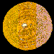
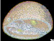
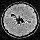
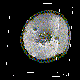
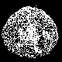
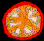
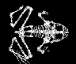

Results for 1994-1995:
The total number of countries that have visited one of
the Web pages is 65.
------------------
HTTP Server General Statistics
Server: https://george.lbl.gov/ (NCSA Common)
Local date: Fri Feb 03 19:05:40 PM PST 1995
Covers: 01/27/94 to 02/03/95 (373 days).
Requests last 7 days: 46720
New unique hosts last 7 days: 5694
Total unique hosts: 88218
Number of HTML requests: 361266
Number of script requests: 242092
Number of non-HTML requests: 145714
Total number of all errors: 771544
Average requests/hour: 86.3, requests/day: 2072.3
HTTP Server Domain Statistics
# reqs : # uniq : Last Access (M/D/Y) : Domain
----------------------------------------------
182880 : 22560 : 02/03/95 : US Educational (.edu)
141299 : 11972 : 02/03/95 : US Commercial (.com)
137707 : 23096 : 02/03/95 : (numerical domains)
64677 : 3381 : 02/03/95 : US Government (.gov)
36099 : 4592 : 02/03/95 : United Kingdom (.uk)
33500 : 4462 : 02/03/95 : Network (.net)
28710 : 3262 : 02/03/95 : Canada (.ca)
17314 : 1740 : 02/03/95 : Germany (.de)
13825 : 1627 : 02/03/95 : Sweden (.se)
12799 : 1529 : 02/03/95 : Australia (.au)
9800 : 1190 : 02/03/95 : Netherlands (.nl)
9441 : 943 : 02/03/95 : Non-Profit (.org)
7850 : 902 : 02/03/95 : France (.fr)
7473 : 794 : 02/03/95 : United States (.us)
7361 : 1014 : 02/03/95 : US Military (.mil)
5269 : 499 : 02/03/95 : Japan (.jp)
4445 : 789 : 02/03/95 : Finland (.fi)
4198 : 558 : 02/03/95 : Switzerland (.ch)
3833 : 509 : 02/03/95 : Norway (.no)
2266 : 286 : 02/03/95 : New Zealand (.nz)
2223 : 330 : 02/03/95 : Italy (.it)
1726 : 214 : 02/03/95 : Austria (.at)
1674 : 224 : 02/03/95 : Belgium (.be)
1550 : 186 : 02/03/95 : Denmark (.dk)
1140 : 117 : 02/03/95 : Ireland (.ie)
951 : 135 : 02/03/95 : Spain (.es)
847 : 147 : 01/30/95 : South Africa (.za)
782 : 124 : 02/03/95 : Israel (.il)
774 : 60 : 02/03/95 : Czech Republic (.cz)
765 : 88 : 02/03/95 : Mexico (.mx)
584 : 76 : 02/03/95 : Singapore (.sg)
490 : 104 : 02/03/95 : South Korea (.kr)
398 : 39 : 02/02/95 : Chile (.cl)
367 : 68 : 02/03/95 : Hong Kong (.hk)
367 : 62 : 01/31/95 : Poland (.pl)
307 : 40 : 02/03/95 : Greece (.gr)
281 : 45 : 01/31/95 : Brazil (.br)
277 : 47 : 02/03/95 : Portugal (.pt)
276 : 36 : 02/03/95 : Old style Arpanet (.arpa)
252 : 18 : 02/03/95 : Iceland (.is)
242 : 23 : 02/02/95 : Luxembourg (.lu)
222 : 39 : 02/03/95 : Malaysia (.my)
214 : 38 : 02/01/95 : Hungary (.hu)
186 : 27 : 01/19/95 : Slovenia (.si)
167 : 15 : 02/02/95 : Estonia (.ee)
159 : 16 : 02/03/95 : Soviet Union (.su)
155 : 7 : 01/30/95 : Great Britain (UK) (.gb)
150 : 29 : 01/24/95 : Taiwan (.tw)
117 : 24 : 02/02/95 : Turkey (.tr)
90 : 19 : 02/01/95 : Croatia (.hr)
75 : 13 : 02/03/95 : International (.int)
69 : 12 : 01/31/95 : Philippines (.ph)
43 : 5 : 01/26/95 : Russian Federation (.ru)
38 : 6 : 01/31/95 : Thailand (.th)
38 : 1 : 08/15/94 : blackstone-atm
37 : 7 : 02/03/95 : Bermuda (.bm)
22 : 3 : 01/09/95 : Uruguay (.uy)
20 : 4 : 01/29/95 : Venezuela (.ve)
20 : 40 : 12/30/94 : Argentina (.ar)
19 : 5 : 02/02/95 : Latvia (.lv)
19 : 3 : 10/16/94 : Ukraine (.ua)
16 : 7 : 01/26/95 : Colombia (.co)
15 : 4 : 01/25/95 : Costa Rica (.cr)
14 : 6 : 01/16/95 : Kuwait (.kw)
14 : 20 : 01/12/95 : India (.in)
12 : 3 : 01/12/95 : China (.cn)
12 : 3 : 01/02/95 : Egypt (.eg)
12 : 1 : 12/22/94 : Liechtenstein (.li)
11 : 1 : 02/01/95 : tycho
10 : 1 : 01/17/95 : j_pwrmac_7100_3
9 : 1 : 01/04/95 : Panama (.pa)
7 : 1 : 01/25/95 : .edy
7 : 1 : 08/17/94 : Romania (.ro)
6 : 2 : 01/23/95 : Indonesia (.id)
6 : 3 : 01/19/95 : Slovak Republic (.sk)
5 : 2 : 02/01/95 : Lithuania (.lt)
5 : 1 : 01/26/95 : .cam
5 : 1 : 01/13/95 : inst_media_2
5 : 1 : 12/17/94 : .sap2
5 : 2 : 09/27/94 : Peru (.pe)
4 : 1 : 01/02/95 : twquadra
4 : 2 : 05/09/94 : Ecuador (.ec)
3 : 1 : 01/24/95 : .gxl
3 : 2 : 09/28/94 : Fiji (.fj)
2 : 1 : 01/29/95 : student4_34
1 : 1 : 02/01/95 : localhost
SCIENTIFIC VISUALIZATION
Geometric Analysis, Visualization, and Conceptualization of 3D Image Data
-
Introduction:
- The acquisition and study of image-like data from throughout the volume of an object permits us to represent and explore the internal three-dimensional structure of that object exactly as it exists in the undisturbed object.
- How is such image data is obtained?
- What kinds of analysis and visualization that can be done with the data by using computer based imaging and visualization?
(1) Acquire information about the inside of an object, and generate a 3D image data set:
The image of the inside of an object can arise from:- - Serial
sections obtained directly (e.g. confocal microscopy, or mechanical
sectioning of an object);
- - Serial sections obtained from NMR or tomographic reconstruction;
- - 3D Holography;
- - Direct calculation from mathematical models.
- - Serial sections obtained from NMR or tomographic reconstruction;
- - The outer skin (the glossy orange surface);
- - The inner skin (the white pithy material below the glossy orange covering);
- - The largest scale membranes that surround the pulpy part of the fruit (that is, the membranes that form the familiar wedges of an orange);
- - The volume region that is occupied by the pulp;
- - The seeds;
- - The "core".
- - The inner skin (the white pithy material below the glossy orange covering);
- - The surface of one, or more, of the geometric models can be represented
as opaque as shown:

- - The masks can be treated as outlines, and stacked, and then used in combination with other models. The image
 )
shows the membrane masks stacked, with the seed model represented as opaque
surfaces.
)
shows the membrane masks stacked, with the seed model represented as opaque
surfaces.
- - Combinations of all of the available techniques usually give the best results as shown: 
- - The masks can be treated as outlines, and stacked, and then used in combination with other models. The image
This work introduces concepts in 3D geometry, 2D and 3D image processing and display, computer graphics and visualization, and the exciting ability of imaging and computer systems to explore the frequently complex and invisible world of the "insides" of a plant, animal, machine, etc.
The resulting 3D image is a discrete scalar field, that is, it is a 3D grid with values given at each point of the grid. This type of 3D image is frequently called a voxel data set. (The word "voxel" is derived from "volume pixel"). The numeric values of the voxels must, of course, be interpreted according to the nature of the imaging process (they might represent material density, concentration of hydrogen, electron density, color, etc.) Figure 1 (  ) shows part of a 3D data set of an NMR (MRI) scan of an orange. The image values (quantity of magnetically excitable hydrogen, which is typically different in different type of biological tissues) are represented as shades of gray. Figure 2 (  ) use optical density to represent the 3D nature of the data. In other words, each grid point is assigned a gray value and opacity based on the magnitude of the data value ("0" is transparent and black, while the highest value is completely opaque, and white). When this representation is carefully designed, the voxel data set is seen in a "cloud like" appearance.

A mask is defined for every slice that intersects the structure of interest. In the case of the outer skin, this means that 64 masks are needed to define the structure since the outer skin intersects all 64 slices of the volume data. ( Figure 3 shows one typical mask for each of the six structures (at slice 32, which is about the middle of the orange).
When we started, the surfaces
of the structures were represented only implicitly by differences
in color.
There are a number of ways to convert the color changes into geometry.
Conceptually most of the methods involve some sort of contouring.
Consider a 2D slice of the volume image, and we draw lines through
that slice along pixels of constant value (color).
This operation effectively defines the boundary between areas of different color.
The masks mentioned above are human supplied hints as to where to draw these
contour lines in the areas where the color difference fades away.
By effectively stacking the masks, and covering the
surfaces with a tightly fitting, fishnet like mesh (a process called
tessellation) we generate
3D polygons that do not overlap each other, and do not leave holes in the mesh.
This mesh of small polygons is now a "geometric" definition of the surface
of the structure of interest. Such a geometric model is built for each structure
of interest. Figure 4 (

)
shows both the inner skin model, and the model for the
seeds.
For a variety of technical reasons relating to differences between mammalian
and amphibian physiology, the resolution of MRI images of a frog were not good
enough to clearly separate internal structures. A high resolution data set
was obtained by a mechanical sectioning technique that gave sufficient
resolution to see detail down to the level of large nerves. Examples of mechanical slice data:
For a report on the mechanical sectioning and associated data collection
issues, please see the
Whole Frog Technical Report. High resolution MRI studies of portions of several plants were done as
part of this project, with an orange forming the basis of the 3D
reconstruction study unit. Images of reconstructed tomato:

Example 3D reconstructions of the
Frog's anatomy:
 The tutorial works through a sample session. Having a step-by-step
tutorial available is a useful addition to documentation pages. The
capabilities of the program, as well as the appearance of the user interface
after various steps, can be directly demonstrated. Forms were used instead of
images of the user interface so that the tutorial will look the same as the
interactive program on the platform used. The first form of the interactive program is brought up through a link from
the introductory page. It is a standard HTML file, with a reference to a
previously-generated top view of the frog. No other permanent HTML files or
GIF images are generated or accessed during any further interaction. All
subsequent images are produced in real time. Clicking on the various icons and checkboxes above, on, and below the
frog results in a form submission to a CGI script, which then contacts
the rendering program.
Figure 1
shows an example form. The interface provides three ways for the user to interactively
learn about frog anatomy: controlling which organs are visible,
controlling the angle from which to view the frog, and using a
mode of interaction that brings up brief descriptions of the
organs seen in the image. In Figure 1, the first two of these
options are exercised. The form settings under the frog image control which organs are visible.
The "Skin" controls determine how much of the frog's skin is seen: all, none,
or with a window cut in the skin to show the internal anatomy. (No attempt is
made to render the muscles, due to difficulties in achieving an accurate mask
for them during segmentation of the data set.) Any combination of the organs
listed may be chosen for viewing. With some combinations, even if an organ is
chosen, it may not be visible because another item (such as the skin) is also
chosen. The organs are color coded to make them readily distinguishable. These do
not necessarily reflect the true colors of the frog's organs. The color
coding used is listed below the image. The images of the frog are inline and thus GIF encoded. The '+' and '-'
controls at the top left of the image determine the size of the image. This
can be up to 60 kilobytes, which takes about 10 seconds on a 56K baud modem.
The controls can be set to send compressed images of 3 different sizes: up to
5 kilobytes for those with slower connections, up to 20 kilobytes for normal
use, and up to 60 kilobytes for high quality. The controls above the image determine the angle from which the frog is
viewed. Clicking on the upper left icon will show the frog, viewed from
above. Clicking on the next icon to the right shows a view from below.
Clicking on the next four icons will result in a changing view of the frog. Clicking on any organ visible in the frog will give a brief description of
that organ. Accomplishing the translation from click to organ description is
described in the section on image generation.
Figure 2 shows the
initial form, reached from the introductory page. The form settings are
passed to a CGI script written in C, running on LBL's Distributed Systems
Departments's Web server. The script parses the incoming data and sends the
result via a socket to an already running rendering process (server) on a
different machine. The load on the Web server is minimal; most of the
computation is performed on the rendering server. In 1994, the load was further spread out by having four different machines
available. Currently one machine is fast enough to handle the rendering. The rendering server generates an image from the data list representing the
frog. The formation of the data list from the voxel and mask data, and the
rendering, are described in the next section.
The data list, consisting of points and associated surface normals, is
about 5 megabytes. It is loaded once upon the instantiation of the rendering
server. After the image is generated by the 3D rendering, it is GIF encoded and
written to a temporary file. Temporary image files more than a half hour old
are purged by a script that runs periodically. The temporary files have
a lifetime that long because a person may want to use the browser's "Back"
button to go back to a previously generated image, and the image may no longer be in cache. The renderer server sends the temporary file name via a socket to the CGI
script. The script prints the form settings and the location of the image file
in HTML format to standard output, where it is intercepted by the http daemon
and sent back to the client. Before printing the form settings out, the
script checks to see if any of them have changed during the current invocation,
as a result of rendering or other actions, and updates them as necessary.
For example, a form "reset" will set all menus and buttons back to
their defaults. Each invocation of the CGI script is completely independent, and thus there
is no information saved from one call to the next. However, the viewing
transformation matrix used during rendering has to be saved to be able to
generate a sequence of gradually changing views, and this viewing matrix has
to be maintained for each user. A method used to store information between
invocations is to incorporate that information in a hidden form field.
Information can also be stored in the URL, but that would result in a lengthy
string in this case. The current transformation matrix is encoded as a string stored in a hidden
field. The CGI script decodes it and passes it to the rendering server,
which may modify the matrix. After rendering, the transformed matrix is
converted back to a string and replaces the previous field value when
the form settings are sent back to the client. An image of the frog is rendered from a pre-existing list consisting of
voxel locations and associated surface normals, representing the organs of
the frog. The list was produced using a modification of the
Dividing Cubes method
[
4
]
for 3D surface generation. Mask values resulting from organ segmentation
are used instead of thresholding to identify the voxels that will be
utilized in the surface generation step. The modified Dividing Cubes
algorithm is used separately on each organ mask, resulting in lists of
voxels for each organ. Since the list is only generated once, time is
not a factor. Enhancements were made to the way surface voxels are chosen
and to the way surface normals are approximated. The resulting point list contains approximately 450,000 points. If
an organ is not selected for viewing, its portion of the point list is
skipped. Rendering is straightforward, using a z-buffer for hidden
surface removal
[
5 ]
]. A limitation of the current method is that the sub-cubes portion
of the Dividing Cubes algorithm is not implemented; the size of the
resulting image is dependent on the original data resolution. To
use the current method, data sets should be at least 256x256x128. The use of point (voxel) primitives and previously generated normals
results in rapid image generation (one second or less for the standard-sized
image) with a good level of detail. Since the image contains much constant
background, especially if only a few organs are selected, the GIF method of
encoding provides a compression ratio of at least 4:1. Transmission of the compressed image over a slow network can cause
delays. However, using the "Back" and "Forward" features of browsers
to go to previously viewed pages, and browsers' use of image caching,
allow quick viewing of the images that have been generated in the last
half hour (older images are purged). While rendering is occurring, an additional technique is used to enable the
"image click to organ translation" feature described in a previous
section.
Analogous to a z-buffer, an "organ buffer" is used to store the current
organ membership for each pixel. When one voxel overwrites another via the
z-buffer method, the organ buffer is updated as well. This technique makes
organ identification possible regardless of the orientation of the view: any
visible part of the organ will be identified by this technique. If the interface has just been placed in organ mode (as opposed to
rotation mode) the organ buffer is written to a temporary file. Further
clicks on the image will result in the CGI script seeking to and reading
the appropriate value from that file, instead of contacting the rendering
server to generate a new view. The seek location is given by the
clicked-on x and y position. Note that the configuration file typically
associated with image-mapping is not used. With a configuration file,
the x and y position are used as an index into a predefined region, and the
exact position is not available to the script.
(3) Create a geometric model for each of the structures of interest:
By "geometric" model we mean a collection of geometric
primitives (points, lines, polygons, etc.) that accurately represent
the shape of the surface. These geometric descriptions are used
to enhance the visualization of the object and to provide for quantitative
analysis (the surface area, volume, mean curvature, topology, etc.).(4) Use computer graphics to visualize the results:
The next step is to present the models in a way that allows people to understand
the spatial features and relationships in the interior
of the object. This is done by using a collection of computer graphics
techniques called visualization.
(5) Exploration and discovery:
When the modeling process is complete, students may explore and manipulate
the invisible geometry of the object. Figure 8 (
 )
is the result of a high school
student using a commercial 3D animation program to make the "exploded"
view of the orange model produced the process described above.
What this student really wants to do is to make
an exploded view of a frog, not like anatomy books where inside
parts are pulled apart to expose what is underneath, but by leaving
everything in it's correct 3D relationship, and "fading out"
the parts that obscure the areas of interest, etc.
)
is the result of a high school
student using a commercial 3D animation program to make the "exploded"
view of the orange model produced the process described above.
What this student really wants to do is to make
an exploded view of a frog, not like anatomy books where inside
parts are pulled apart to expose what is underneath, but by leaving
everything in it's correct 3D relationship, and "fading out"
the parts that obscure the areas of interest, etc.
THE TECHNIQUE FOR ACQUIRING AND PROCESSING THE FROG DATA

3D Reconstructions
VIRTUAL FROG DISSECTION OVER THE WEB
Tutorial Pages
Dissection Interface
System Architecture
Image Generation
Page last modified: 03/26/19
Contacts: Bill Johnston,
David Robertson

{kind=link}
{kind=link}
{kind=link}
{kind=link}
{kind=link}
{kind=link}
{kind=link}